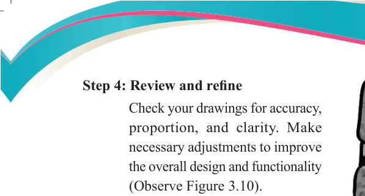
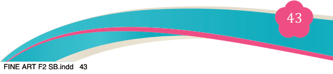
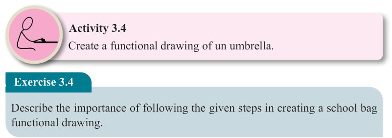
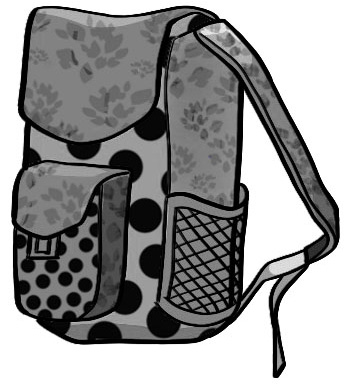

Fine Art for Secondary Schools

43

Student’s Book Form Two

Activity 3.4
Create a functional drawing of un umbrella.
Exercise 3.4
Describe the importance of following the given steps in creating a school bag functional drawing.
Principles of simple functional drawing
Perspective
Perspective in art is a technique used to create a three-dimensional illustrative image with depth on a two-dimensional surface, making the represented objects
appear as if they are real. It is a major principle of art, essential for creating various
artworks, including functional ones. Artists who draw and paint realistic images
constantly seek ways to add depth and enhance the sense of realism in their work.
We always view things differently from the way they are. Normally, objects of the same size tend to decrease in size when they are placed far away from the observer. The electric poles for example, get shorter at a far distance and the long straight road gets sharper at a far distance. That is how we view objects in our environment. Our view of the environment depends on the distance and viewing angle. A representational drawing is possible to compose when this knowledge is at hand.
The viewing angles can play a very big role in presenting what is viewed. These
viewing angles are used depending on the chosen type of linear perspective. These
views include the following:
Step 4: Review and refine
Check your drawings for accuracy,
proportion, and clarity. Make
necessary adjustments to improve
the overall design and functionality
(Observe Figure 3.10).

Figure 3.10: A final drawing of a school bag
04/08/2025 13:54